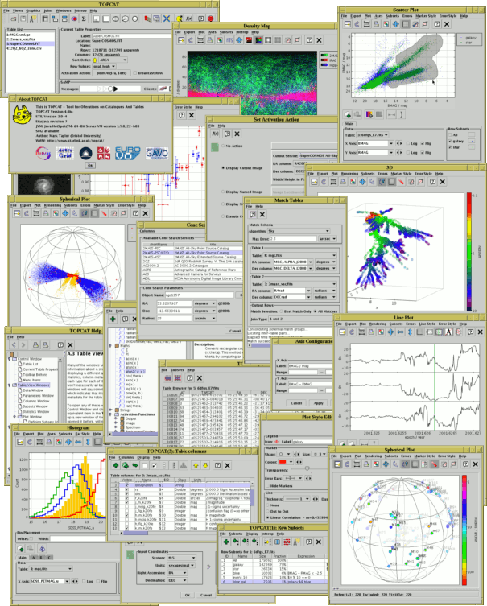

TOPCAT: Tool for OPerations on Catalogues And Tables
TOPCAT is an interactive graphical viewer and editor for tabular data. Its aim is to provide most of the facilities that astronomers need for analysis and manipulation of source catalogues and other tables, though it can be used for non-astronomical data as well. It understands a number of different astronomically important formats (including FITS, VOTable and CDF) and more formats can be added. .Aladin
Aladin is an interactive sky atlas allowing the user to visualize digitized astronomical images or full surveys, superimpose entries from astronomical catalogues or databases, and interactively access related data and information from the Simbad database, the VizieR service and other archives for all known astronomical objects in the field.ARI's Gaia Services
The Gaia team at ARI proudly presents you its online services to access the Gaia catalogue. On this website you will find information and a simple web form for each of the provided services.VOSA (VO Sed Analyzer)
VOSA (VO Sed Analyzer) is a tool designed to perform the following tasks in an automatic manner:- Read user photometry-tables.
- Query several photometrical catalogs accessible through VO services (increases the wavelength coverage of the data to be analyzed).
- Query VO-compliant theoretical models (spectra) and calculate their synthetic photometry.
- Perform a statistical test to determine which model reproduces best the observed data.
- Use the best-fit model as the source of a bolometric correction.
- Provide the estimated bolometric luminosity for each source.
- Generate a Hertzsprung-Russel diagram with the estimated parameters.
- Provide an estimation of the mass and age of each source
Clusterix 2.0
Clusterix 2.0 is an interactive web-based application to calculate the grouping probability of a list of objects using proper motions and the non parametric method proposed by Cabrera-Caño& Alfaro (1985) and described in Galadí-Enríquez et al. 1998. It also allows the possibility of gathering physical parameters (parallaxes, radial velocities, proper motions,...) from Vizier and estimating effective temperatures, surface gravities and metallicities using VOSA